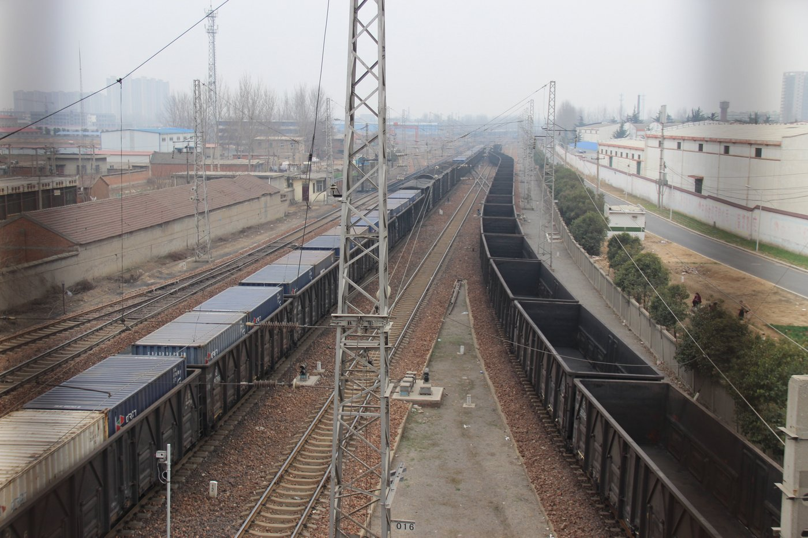
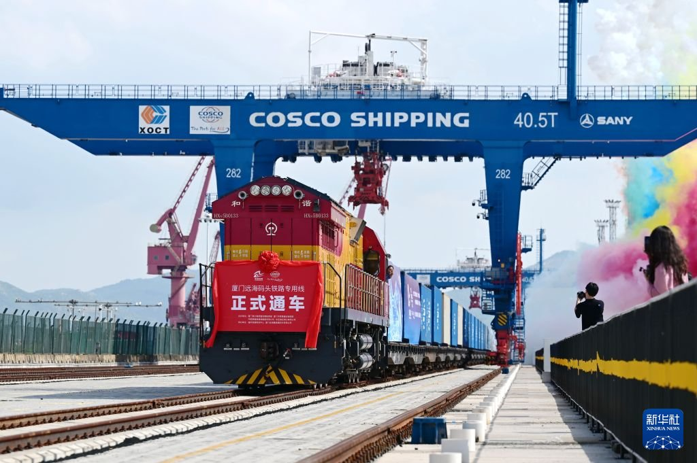
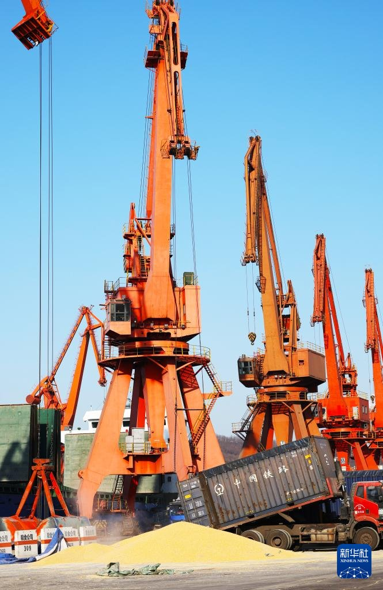
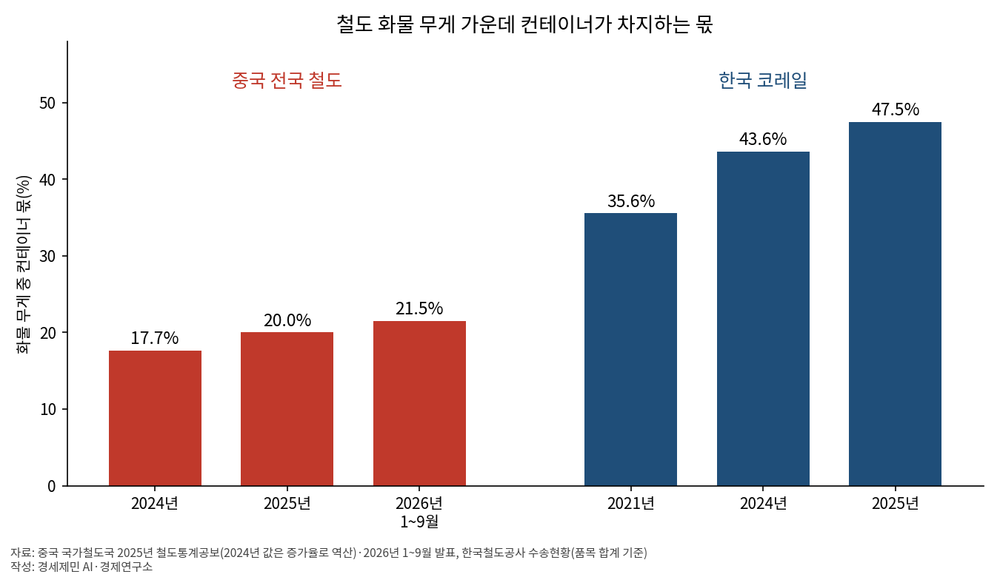
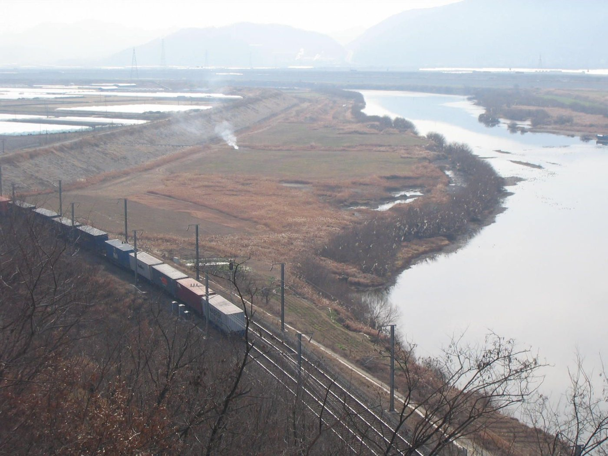

[중국철도⑬] 중국 철도 컨테이너 4188만TEU, 석탄도 상자에… 철도화물 무게 중 몫 중국 20% 한국 47.5%
2025년 전국 철도 컨테이너 10억5807만톤, 15.8% 늘어 철도화물 52억7748만톤의 20%
2025년 컨테이너 1억4400만톤 늘고 상자 밖 화물 4000만톤 넘게 줄어
한국 코레일 화물 중 컨테이너 47.5%, 2021~2025년 시멘트 화물이 절반으로 줄어 높아진 비율
AI경세제민=김갑봉 기자 | 국유 철도 운영사 중국국가철도그룹(국철집단)이 2025년 나른 컨테이너는 4188만3000TEU로 전년보다 14.2% 늘었다. 무게로는 전국 철도 화물 52억7748만톤 중 컨테이너가 10억5807만톤으로 20.0%다.
중국 연구진은 석탄·광석을 담는 뚜껑 없는 상자를 그 까닭으로 꼽았다. 이들이 인용한 2023년 집계로 컨테이너 물량의 65%가 이 상자였다. 한국 코레일 화물 중 컨테이너는 2025년 47.5%다. 2021년보다 양은 줄었는데 비율은 올랐다.

4188만TEU, 철도화물 무게의 20%

2025년 전국 철도 화물은 52억7748만톤으로 2.0% 늘었다. 같은 해 컨테이너는 10억5807만톤으로 15.8% 뛰었다. 비중은 2024년 17.7%에서 20.0%로 올랐다. 2024년 값은 공보의 증가율로 되짚어 셈했다.
한 해 증가분은 전체 1억300만톤이다. 연구소가 셈하면 컨테이너만 1억4400만톤 안팎 늘어 상자 밖 화물은 4000만톤 넘게 줄었다. 석탄은 27억6488만톤으로 2.1% 줄었다. 공보 품목표에서 석탄과 컨테이너는 다른 줄이다.
2026년 1~9월 전국 철도 화물은 39억4100만톤으로 0.8% 늘었다. 컨테이너는 8억4800만톤으로 9.1% 늘어 무게의 21.5%를 차지했다. 2025년 같은 기간 19.9%보다 1.6%포인트 높다(연구소 계산).
석탄을 뚜껑 없는 상자에
산개집(散改集)은 낱짐을 상자에 담아 나르는 일이다. 대상은 석탄·철광석 정광·곡물·면화 같은 대량 화물이다. 국무원판공청은 2021년 말 운송구조 조정 방안(2021~2025년)에서 산개집을 장려했다. 국철집단 화물부도 이를 민다.
대표 상자는 뚜껑 없는 20피트 컨테이너다. 같은 방안은 35톤급인 이 상자를 더 쓰라고 했고 국철집단 기업표준이 규격을 정했다. 짐은 32톤까지 실어 일반 상자보다 14.7% 많다. 짐을 위로 붓고, 트럭에 실은 채 한쪽 끝으로 쏟아 내릴 수 있다.

베이징교통대 룽차오허(荣朝和) 연구진이 인용한 집계로 국철 컨테이너는 2016년 1억2500만톤에서 2023년 7억3200만톤으로 늘었다. 이들은 중국-유럽 화물열차 말고는 이 상자에 석탄·광석·건자재를 담은 덕이 크다고 봤다.
350㎞ 밖 탄광에서 공장 문 앞까지
연구진은 석탄 수요처 대부분이 전용선을 놓을 물량이 못 된다고 봤다. 사례 속 역 주변 기업 200~300곳은 약 350㎞ 떨어진 탄광의 석탄을 쓴다. 합치면 한 해 수천만톤이다. 기존 무개화차로는 문 앞까지 못 가 많은 수요처가 트럭을 택했다.
한 철도국이 석탄을 상자에 담아 트럭과 이었다. 이 탄광 철도 석탄은 2017년 1801만5000톤에서 2020년 4644만3000톤이 됐다. 상자 몫은 11.2%에서 90.4%로 올랐다. 그해 철도국 화물 중 컨테이너는 40.3%였다.
국무원판공청 방안은 석탄·광석 같은 화물을 연 150만톤 이상 나르는 물류단지·공장·광산 등을 새로 짓거나 옮길 때 원칙적으로 전용선이나 관로를 잇게 했다. 기존 전용선은 함께 쓰게 했다. 연구진은 중소 수요처엔 상자가 문 앞 배송을 연다고 했다.
뚜껑 없는 상자 빼면 국철 화물의 6.6%
연구진은 뚜껑 없는 상자를 빼면 2023년 컨테이너가 국철 화물의 6.6%라고 적었다. 모두 넣으면 18.72%로, 앞의 전국 기준과 분모가 다르다. 2005년 2.41%, 2014년 2.95%이던 비중을 벌크 상자가 끌어올렸다고 봤다.
국철집단 운송관제센터 궈카이성(郭凯生)은 2024년 논문에서 컨테이너 증량 걸림돌 넷을 들었다. 첫째 장비 현대화 수준이 낮다. 둘째 표준이 제각각이고 기제가 엇갈린다. 셋째 철도 수송력이 때로 모자란다. 넷째 복합운송 상품 경쟁력이 약하다.
허페이철도물류센터 천샤오둥(陈晓东)은 곡물을 뚜껑 없는 상자에 실으면 방수포를 덮어 묶기 번거롭고 젖기 쉽다고 짚었다. 장시성 난창철도물류센터 측은 지붕 문을 여닫는 곡물 상자가 뚜껑 없는 상자보다 꽉 채워 싣고 효율이 70% 올랐다고 밝혔다.
기존 코일 강판 상자는 빈 채로 돌아온다. 국철 계열 중철컨테이너는 뚜껑 없는 상자에 받침대를 넣는 방식을 설계했다. 이 회사 딩원잉(丁文赢)의 논문에 따르면 2024년 3~5월 네 차례 시험 운송했다. 돌아갈 땐 빈 받침대 다섯 벌을 한 상자에 싣는다.
한국 47.5%, 분모가 줄어 오른 몫

코레일 2025년 화물 1798만4000톤 중 컨테이너는 854만6000톤으로 47.5%다. 2021년 35.6%보다 12%포인트 가까이 높다. 연구소 셈으로 중국의 두 배를 넘는다. 두 나라가 상자 무게를 넣어 셈하는지는 확인하지 못했다.
컨테이너 양은 2021년 937만3000톤보다 8.8% 적고 2023년보다 9.1% 많다. 시멘트가 1044만2000톤에서 525만7000톤으로 49.7% 줄며 전체가 31.8% 줄었다. 2023년부터 컨테이너가 시멘트를 앞섰다.

코레일 수송자원 목록상 시멘트 화차는 벌크시멘트 화차 1378량과 포대시멘트용 유개차 549량이다. 28개역에 시멘트 저장고 76기가 있다. 컨테이너차는 2066량이다. 목록은 화차와 시설만 적어 시멘트 전용 상자 보유는 알 수 없다.
김경태 등은 2013년 논문에서 벌크시멘트를 철도 최대 품목으로 꼽았다. 시멘트 전용 컨테이너가 효율을 높인다고 봤다. 중국은 2025년 상자 안 짐이 늘고 밖 짐이 줄었다. 한국은 2021~2025년 상자 안 짐도 줄었지만 밖 짐이 더 줄었다.
참고문헌
- Rong, Chaohe·Li, Xingchan·Zhang, Gaiping·Wang, Xuecheng, "Analysis on the adjustment of transportation structure and the logistics transformation of railway freight", Railway Sciences 4권 1호 82-96쪽(DOI 10.1108/RS-09-2024-0040), 2025.1.27., https://www.emerald.com/rs/article/4/1/82/1243316/Analysis-on-the-adjustment-of-transportation
- 郭凯生, "铁路集装箱多式联运增量瓶颈对策探讨", 铁道货运 42권 8호 15-20쪽(DOI 10.16669/j.cnki.issn.1004-2024.2024.08.03), 2024.8., https://search.napstic.cn/literature/periodical/010tdhy202408003
- 陈晓东, "铁路粮食散装运输发展的现状与对策", 铁道货运 42권 2호 23-27쪽(DOI 10.16669/j.cnki.issn.1004-2024.2024.02.04), 2024.2., https://search.napstic.cn/literature/periodical/010tdhy202402004
- 丁文赢, "「敞顶箱+卷钢托盘」运输方案及应用研究", 铁路物流 43권 8호 34-39쪽(DOI 10.16669/j.cnki.issn.2097-5899.202503210002), 2025.8.25., https://cjournal.hep.com.cn/2097-5899/CN/10.16669/j.cnki.issn.2097-5899.202503210002
- 김경태·김학성·원종운·방연근, "벌크시멘트 철도물류 프로세스 개선 방안", 물류학회지 23권 1호 147-169쪽, 2013.3., https://scholar.kyobobook.co.kr/article/detail/4010023585174
- "国务院办公厅关于印发推进多式联运发展优化调整运输结构工作方案（2021—2025年）的通知"(国办发〔2021〕54号. 35톤 오픈톱 상자 사용 확대, 산개집 장려, 연 150만톤 이상 신설·이전 시설의 전용선·관로 접속), 중국 국무원판공청, 2022.1.7., https://www.gov.cn/zhengce/content/2022-01/07/content_5666914.htm
- "2025年铁道统计公报"(전국 철도 화물 52억7748만톤, 컨테이너 10억5807만톤 15.8% 증가, 석탄 27억6488만톤 2.1% 감소), 중국 국가철도국, 2026.5.29., https://www.nra.gov.cn/xwzx/zlzx/hytj/202605/P020260529633504739062.pdf
- "2026年前三季度全国铁路客货运量创历史新高"(1~9월 철도 화물 39억4100만톤, 컨테이너 8억4800만톤 9.1% 증가), 중국 국가철도국, 2026.10.19., https://www.nra.gov.cn/xwzx/xwxx/xwlb/202610/t20261019_352195.shtml
- "수송현황"(2021~2025년 품목별 철도 수송실적), 한국철도공사, 2026.10.27. 조회, https://info.korail.com/info/contents.do?key=871
- "수송자원"(벌크시멘트조차 1378량, 포대시멘트용 유개차 549량, 컨테이너차 2066량, 시멘트 저장고 28개역 76기), 한국철도공사, 2026.10.27. 조회, https://info.korail.com/info/contents.do?key=872
- 李心萍, "前2月国家铁路集装箱运量同比增14.6% 从铁路集装箱看转型"(국철집단 화물부 산개집 추진, 2025년 3월 장시성 지붕 문 개폐 상자 곡물 열차, 난창철도물류센터 적재 효율 70%), 인민일보(중국정부망 전재), 2025.3.23., https://www.gov.cn/yaowen/liebiao/202503/content_7015179.htm
- "42.55亿人次 40.66亿吨 9015亿元 从数据看2025年铁路交出亮眼成绩单"(국철집단 발표 2025년 철도 컨테이너 4188만3000TEU 14.2% 증가), 광명망(앙시망 인용), 2026.1.4., https://m.gmw.cn/2026-01/04/content_1304290454.htm
[사진 출처]
- [사진 1] Gary Todd, "China Rail Container & Unit Coal Trains (25409141691).jpg", 위키미디어 공용, CC0, https://commons.wikimedia.org/wiki/File:China_Rail_Container_%26_Unit_Coal_Trains_(25409141691).jpg
- [사진 2] 린산촨(林善传) 신화통신 기자, "全国首条「垂直岸线、直达码头」海铁联运专用线投运", 신화통신(신화망), 2026.7.29., https://www.news.cn/photo/20260729/f9529f4246144ac8aa21ce2665927897/c.html (소장님 예외 출처, 2026.10.15)
- [사진 3] 양칭(杨青) 신화통신 기자, "辽宁营口：「北粮南运」运输忙"(5번째 사진: 装满玉米的敞顶箱在码头卸货), 신화통신(신화망), 2025.2.19., https://www.news.cn/photo/20250219/4ba4cda5414d40a5b9049428342e7eeb/c.html (소장님 예외 출처, 2026.10.15)
- [사진 4] Visviva, "Miryang train river.jpg", 위키미디어 공용, 퍼블릭 도메인, https://commons.wikimedia.org/wiki/File:Miryang_train_river.jpg
관련기사
- [중국철도⑫] 철도 연결 항만 90%, 컨테이너 철도 몫 중국 3.8% 한국 2.2%
- [중국철도⑪] 중국·키르기스·우즈베크 철도, 착공 2년에 공정률 목표 5%
- 중국-유럽 화물열차 동부 통로, 올해 2000편 돌파…화물량 44.8% 급증
- 한국 대륙 철도 다섯 통로, 북한 못 지나면 무용지물
저작권자 © AI경세제민 무단전재 및 재배포, AI학습 및 활용 금지